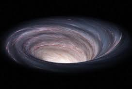
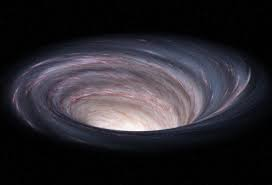
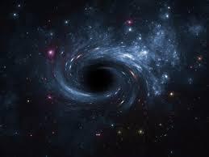

Exoplanets
🪐 Exoplanets: Worlds Beyond Our Solar System
Images of Exoplanets
 

Exoplanets are planets that orbit stars outside our solar system. Scientists have discovered thousands, and some might even be habitable! 🌍✨
🛸 Types of Exoplanets
- 🔹 Hot Jupiters – Giant gas planets that orbit very close to their stars.
- 🔹 Super-Earths – Rocky planets larger than Earth but smaller than Neptune.
- 🔹 Mini-Neptunes – Planets smaller than Neptune with thick atmospheres.
- 🔹 Rogue Planets – Free-floating planets not bound to any star.
🚀 Mind-Blowing Facts About Exoplanets
🌠 The first exoplanet was discovered in **1992**, and now we know of **5,000+ exoplanets**!
🌊 Scientists found an exoplanet, **TOI-1452b**, that might be completely covered in water!
🔥 Some exoplanets, like **KELT-9b**, are hotter than some stars!
🌍 The best candidate for life is **Kepler-452b**, often called "Earth’s Cousin."
🎥 Watch This Video About Exoplanets
Black Holes
🕳️ Black Holes: The Cosmic Abyss
Images of Blackholes

Black holes are regions in space where gravity is so intense that nothing—not even light—can escape. They are some of the most mysterious and powerful objects in the universe! 🌌
⚫ Types of Black Holes
- 🔹 Stellar Black Holes – Formed when massive stars collapse.
- 🔹 Supermassive Black Holes – Millions to billions of times the Sun’s mass, found at galaxy centers.
- 🔹 Intermediate Black Holes – A rare, in-between type that might help explain how supermassive black holes form.
- 🔹 Primordial Black Holes – Hypothetical black holes formed right after the Big Bang.
🛸 Mind-Blowing Facts About Black Holes
🌠 The closest known black hole to Earth is about 1,500 light-years away.
🌀 The largest black hole discovered is over 40 billion times the mass of the Sun!
🏃 Time slows down near a black hole due to extreme gravity—if you fell in, you'd appear frozen in time!
🔭 The first-ever image of a black hole was captured in 2019 by the Event Horizon Telescope!
🎥 Watch This Video About Black Holes
Galaxies
🌌 Galaxies in Space: Mysteries of the Universe
Images of Galaxies


Galaxies are vast cosmic systems made up of stars, planets, gas, dust, and dark matter, all bound together by gravity. Our Milky Way is just one of the trillions of galaxies in the universe!
🔭TYPES OF GALAXIES
- 🔹 Spiral Galaxies – Like the Milky Way, they have spiral arms full of stars, gas, and dust.
- 🔹 Elliptical Galaxies – Shaped like smooth ovals and mostly contain old stars.
- 🔹 Irregular Galaxies – No specific shape; often formed by galactic collisions.
- 🔹 Lenticular Galaxies – A mix between spiral and elliptical galaxies.
🚀 Mind-Blowing Facts About Galaxies
✨ The Milky Way is over 100,000 light-years across and contains 200 billion stars!
✨ The closest galaxy, Andromeda, is on a collision course with the Milky Way in 4.5 billion years!
✨ Supermassive black holes exist at the center of most galaxies.
✨ Scientists estimate there are 2 trillion galaxies in the observable universe!
🎥 Watch More About Galaxies
Dark matter
🌌 Dark Matter: The Invisible Mystery of the Universe
Scientists believe that most of the universe is made up of dark matter, an invisible and mysterious substance that doesn’t emit, absorb, or reflect light—but its gravitational effects shape galaxies and cosmic structures.
🕵️ What is Dark Matter?
Dark matter makes up about 27% of the universe, while ordinary matter (stars, planets, and us!) accounts for only 5%. The rest is dark energy, which drives the universe's expansion.
🔬 Evidence of Dark Matter
- 🔹 Galaxy Rotation Curves – Galaxies spin faster than expected, suggesting an invisible mass is holding them together.
- 🔹 Gravitational Lensing – Light from distant galaxies bends around unseen matter, proving its presence.
- 🔹 Cosmic Microwave Background (CMB) – Subtle fluctuations in the universe’s oldest light reveal the influence of dark matter.
- 🔹 The Bullet Cluster – A famous collision of galaxy clusters where dark matter separated from visible matter.
💡 Dark Matter vs. Dark Energy
🚀 Dark Matter – Provides gravity and binds galaxies together.
⚡ Dark Energy – Pushes the universe apart, accelerating expansion.
❓ What Could Dark Matter Be?
- 🖤 WIMPs (Weakly Interacting Massive Particles) – Hypothetical particles that barely interact with normal matter.
- ⚫ Axions – Tiny particles theorized to explain certain quantum mysteries.
- 🌀 Primordial Black Holes – Some believe that small black holes from the early universe could be part of dark matter.
🔭 How Are Scientists Searching for Dark Matter?
- 🔹 Large Hadron Collider (LHC) – Smashing particles together to detect dark matter interactions.
- 🔹 Underground Detectors – Searching for weak dark matter interactions deep underground.
- 🔹 Space Telescopes (like James Webb & Hubble) – Observing gravitational lensing effects of unseen mass.
🌠 Dark Matter remains one of the biggest mysteries in astrophysics. Scientists are racing to unlock its secrets, and its discovery could rewrite our understanding of the universe!
h3>🎥 Watch More About DarkmatterAliens
👽 Aliens & Extraterrestrial Life 🚀
Are We Alone in the Universe?For centuries, humans have wondered whether extraterrestrial life exists beyond Earth.
Scientists, astronomers, and space agencies continue to explore planets, moons, and galaxies in search of answers.
🛸 Possible Signs of Alien Life
🔹 Exoplanets & Habitability – Thousands of exoplanets (planets outside our solar system) have been discovered, some in the "habitable zone," where liquid water might exist.🔹 Mysterious Radio Signals – Scientists have detected unexplained signals from deep space, including Fast Radio Bursts (FRBs) and repeating signals.
🔹 Martian Microbes? – Mars rovers are searching for evidence of ancient microbial life on the Red Planet.
🔹 Oumuamua – The Interstellar Visitor – A mysterious object from outside our solar system passed by in 2017, sparking debates about its origins.
👾 Famous Alien Theories & Sightings
📡 The Fermi Paradox – If aliens exist, why haven’t we made contact yet?🛸 Roswell Incident (1947) – The most famous UFO crash site in history.
🌌 Drake Equation – A scientific formula estimating the probability of alien civilizations.
👀 Area 51 & UFO Conspiracies – The US government's secret research base is often linked to extraterrestrial encounters.
🚀 SETI & NASA’s Search for Life
The Search for Extraterrestrial Intelligence (SETI) scans the skies for alien signals, while NASA’s missions, like the James Webb Space Telescope, explore distant planets for habitable conditions.MARS
🚀 Mars: The Red Planet

Mars, often called the "Red Planet", is the fourth planet from the Sun and a top candidate for future human exploration! 🏜️🚀
🛰️ Key Features of Mars
- 🔹 Thin Atmosphere – Mostly carbon dioxide, making it hard for humans to breathe.
- 🔹 Olympus Mons – The tallest volcano in the solar system, 3 times higher than Mount Everest! ⛰️
- 🔹 Valles Marineris – A massive canyon system stretching 4,000 km, deeper than the Grand Canyon! 🏜️
- 🔹 Ice at the Poles – Frozen water exists, increasing the chances of finding past life! ❄️
🚀 Mind-Blowing Facts About Mars
🔴 A day on Mars lasts **24.6 hours**, but a year is **687 Earth days** long!
🌌 Mars has **two small moons**, Phobos & Deimos, which might be captured asteroids.
🏠 Scientists are working on **colonizing Mars**, with plans for the first humans to land by the 2030s!
🤖 NASA’s **Perseverance rover** is currently exploring Mars and searching for signs of ancient life!
🎥 Watch This Video About Mars
WORMHOLES
🌀 Wormholes: Shortcuts Through Space-Time
Images of Wormholes


Wormholes, also known as "Einstein-Rosen bridges", are theoretical tunnels that connect distant points in space and time. Could they be the key to **faster-than-light travel**? 🚀✨
🔭 The Science Behind Wormholes
- 🔹 Predicted by Einstein – Wormholes come from the **theory of general relativity**.
- 🔹 Two Ends, One Tunnel – They could link **different parts of the universe** or even **parallel universes**! 🌌
- 🔹 Stabilized by Exotic Matter – To remain open, a wormhole might need mysterious negative-energy particles. 🛸
- 🔹 Theoretical Only – No wormhole has ever been found, but scientists continue to search! 🔬
🚀 Mind-Blowing Facts About Wormholes
🌠 If wormholes exist, they could allow for **instantaneous space travel** across galaxies!
⏳ Some theories suggest **wormholes could connect different time periods**, making **time travel** possible.
🔮 In movies like Interstellar, wormholes are used to explore distant planets beyond our reach. 🎥
🌌 Some scientists believe **black holes** might actually be wormholes leading to other universes!